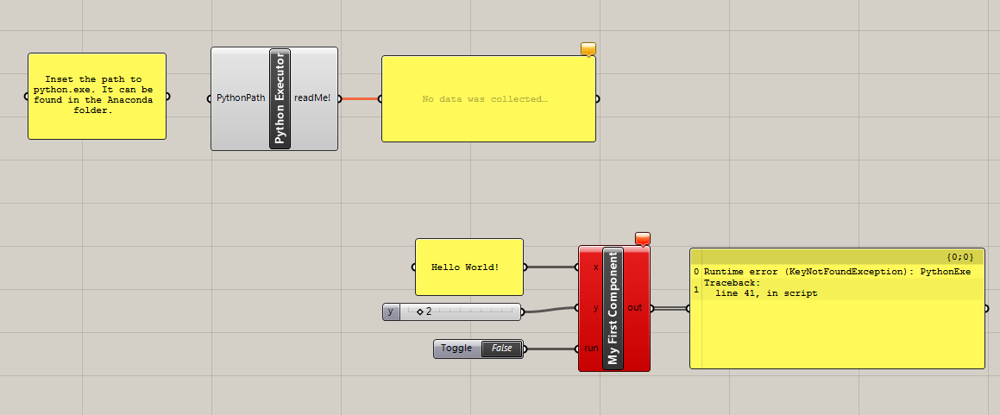
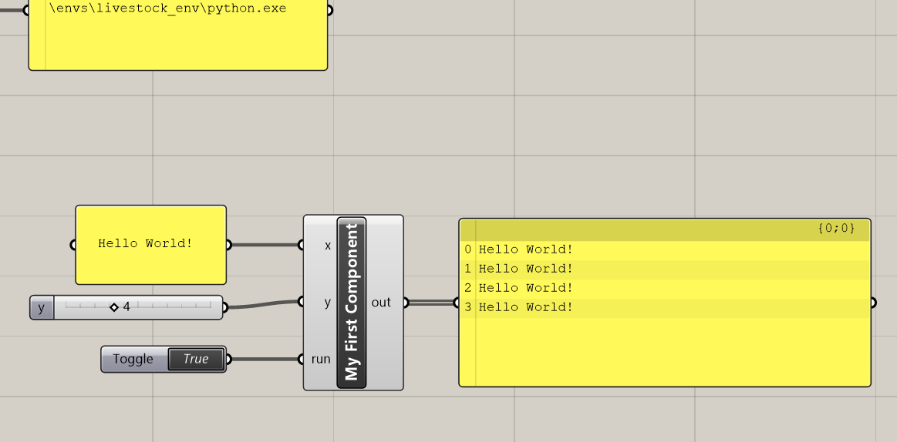

You have to save and restart Grasshopper before we start testing the our component. We do that to make sure that Rhino has loaded the newest versions of the scripts from
%appdata%\McNeel\Rhinoceros\5.0\scripts\livestock3d
When you open "1 - My First Component.gh" it should look something like this: 
You should be missing the panel with "Hallo World!", the slider and the boolean toggle. Add those three things as in the image. You can see that our component is red and has an error message. Connect a panel to "out" to see the message. The component complains that it can not find PythonExe. PythonExe is the path to python.exe. We specify that path in the component Python Executor. Let us do that now. python.exe should be located in the Anaconda folder. You can usually find it in C:\Users\your_username\Anaconda3. Navigate to the "envs" folder and then the livestock_env folder. Here you will find python.exe. Copy the path to python.exe into the panel left of the Python Executor component hand connect the panel. The panel should contain something like this:
C:\Users\Christian\Anaconda3\envs\livestock_env\python.exe
If Python Executor is yellow, it means that you have put in a non-valid path. Our component is still red, though. Disable it and enable it again to make that go away. Everything should be fine now, and it is time to set the boolean toggle to True. A window should open and close real fast. That means that the CPython function has been ran. In the panel connected to "out" you should be able to see the results. 
Congratulations! You have now created your very first Grasshopper component, that uses the Livestock Template Method! Being able to run native CPython code is a great advantage and increases the possibilities of what you can do. Just head over to PyPI or Github to find a cool library you would like to use!
Before we completely wrap up. Let us take a look on what happened, when the component ran:
- The Grasshopper component writes the data_file.txt
- Then the template file: my_first_template.py
- It then spawns a subprocess, calling python.exe to execute my_first_template.py
- When executed my_first_template.py calls my_function() from the livestock3d.py file
- my_function() reads the data_file.txt and creates the result.txt
- The Grasshopper component reads result.txt and prints out the lines
We can go to:
C:\livestock3d\data
and see that all the files are still there:
- data_file.txt
- my_first_template.py
- results.txt
If you want to know more take a look at the post How is it working?, continue with a our second tutorial or even better: Make your own component.